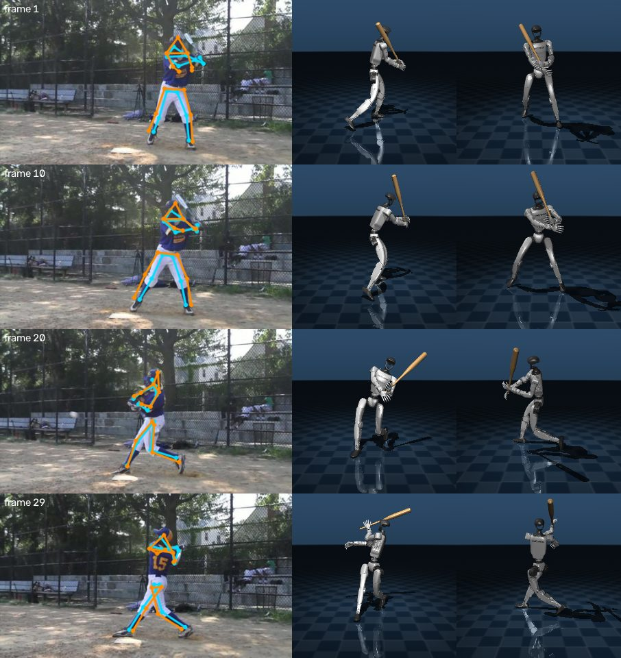
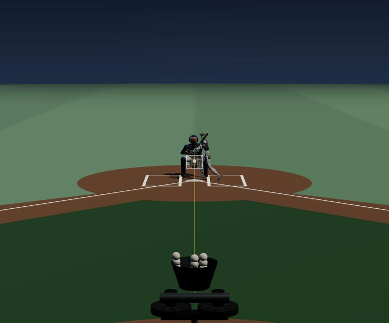
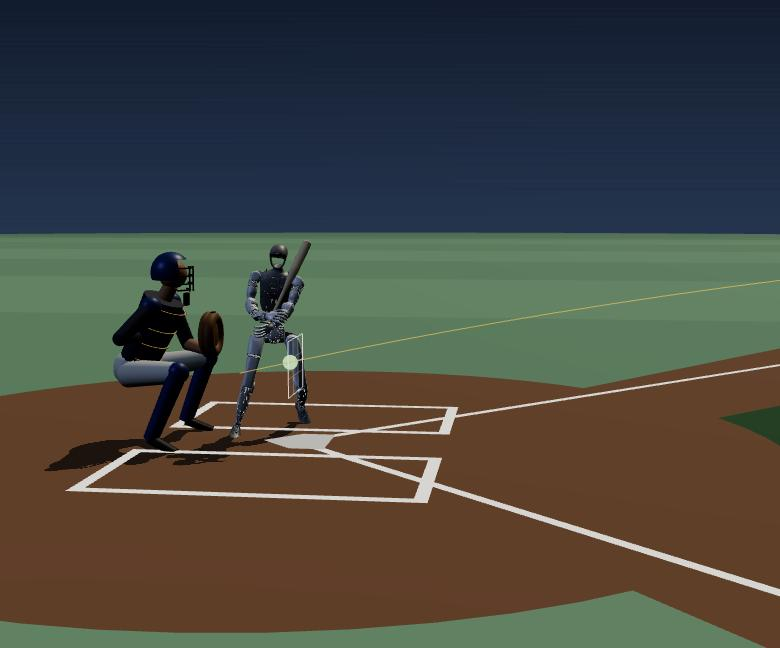

01
One baseball video
A youth batter, filmed from the side. That's the only input.
Turn any video into simulation.
Real to sim to real, for humanoids. One clip of a person swinging a bat becomes a physically checked motion, a training environment and a policy a Unitree G1 runs on its own. Human video is the dataset: no mocap, no teleoperation.
A youth batter, filmed from the side. That's the only input.
SAM 3 finds "baseball batter" from text. SAM 3D Body recovers 70 keypoints in 3D, hands included.
IK maps the body onto a Unitree G1, with both hands on the bat. The clip is mirrored, so the robot bats right-handed.
Every generation is checked against physics. Claude reads the numbers and the contact sheet, then patches the pipeline.
↺ patch → next generation

The swing becomes a target. The policy sees its body and where the swing goes next, and outputs corrections to joint targets.
A helping force holds it up at first, then fades to zero. After that the robot balances through the whole swing on its own.
rewardhelping force
The same physics, live: a pitching machine, a catcher, the 2026 ABS strike zone, and a switch for the trained policy.

